1024×576，固定 seed，一次只跑一張、每張獨立程序（生完即卸載）。畫面角落的「AI 示意圖」是上片時的固定標籤示範。規則：插畫／水墨，不擬真照片、不模仿在世畫家；只用在沒有公有領域畫作可用的段落。
| 段落 | Z-Image-Turbo (4-bit, mflux) 9 步 · seed 42 | FLUX.2 [klein] 4B (q4, mflux) 4 步 · seed 42 | FLUX.1 [schnell] (q4, mflux) 4 步 · seed 42 |
|---|---|---|---|
| s05-qingqiu 場景重建：山海經南山經的青丘之獸；現行是 reveal_list 動畫，沒有對應古畫 | 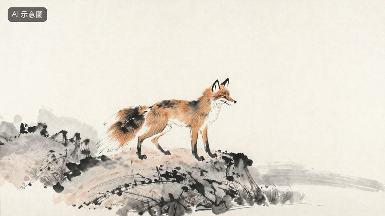 | 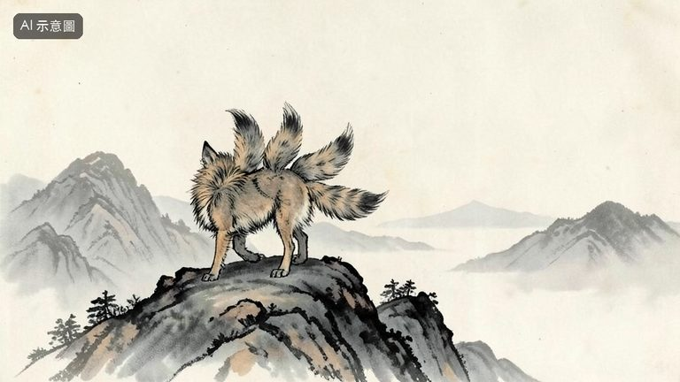 | 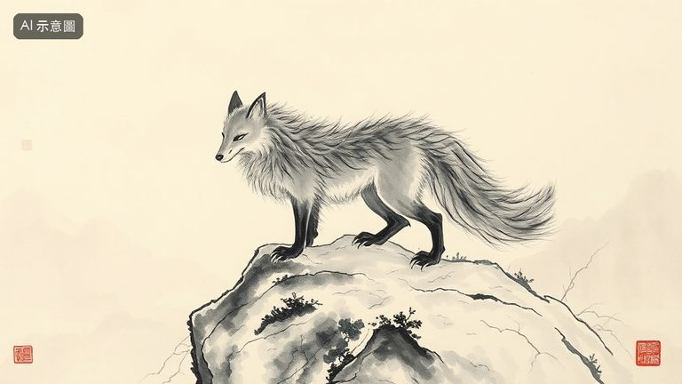 |
| s09-tushan 場景重建：吳越春秋：大禹在塗山遇九尾白狐；沒有公有領域畫作 | 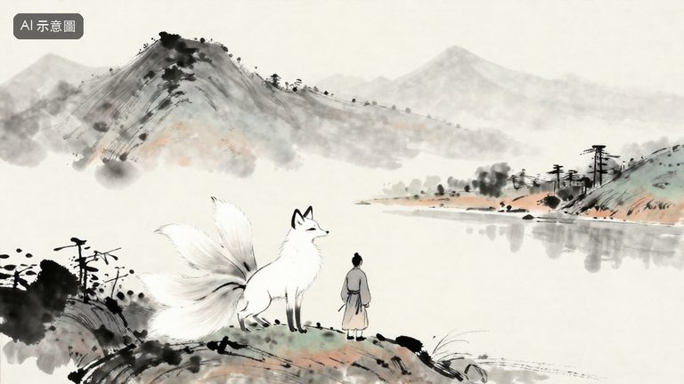 | 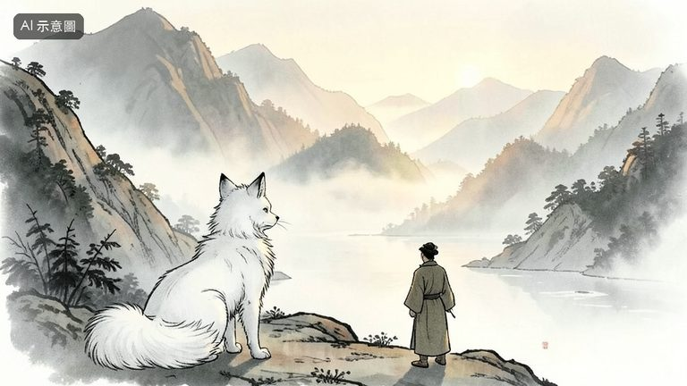 | 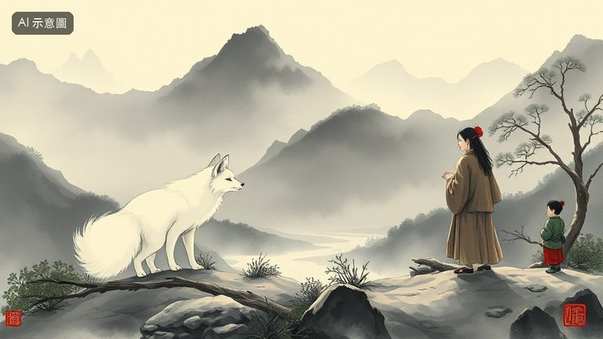 |
| s12-transform 氣氛：玄中記：狐狸五十歲變婦人；概念畫面，沒有古畫 | 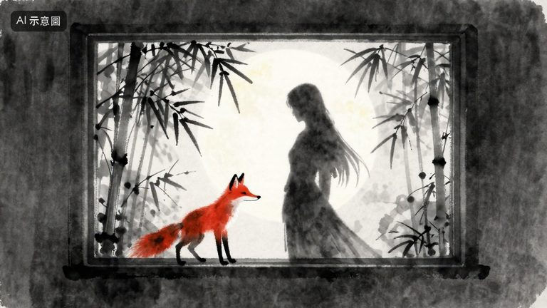 | 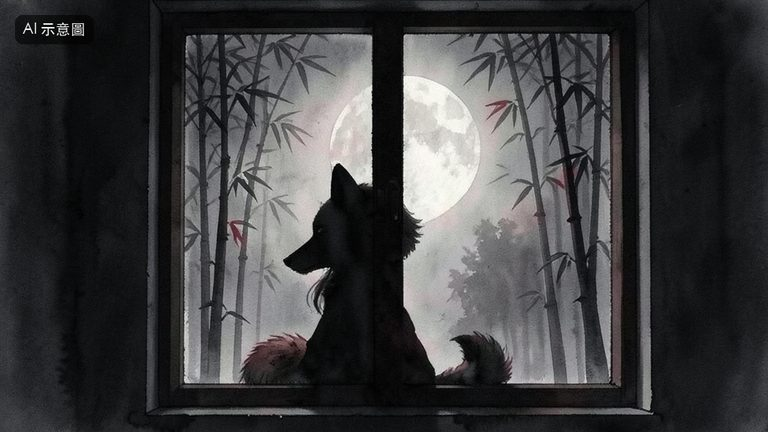 | 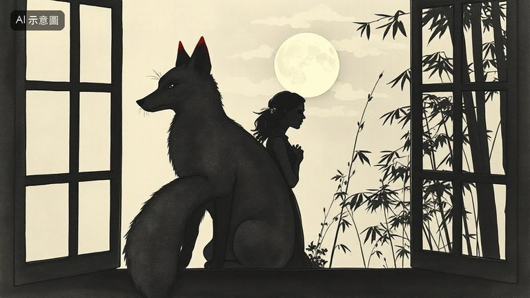 |
| s13-shrine 場景重建：朝野僉載：唐代百姓家家拜狐神；沒有對應古畫 | 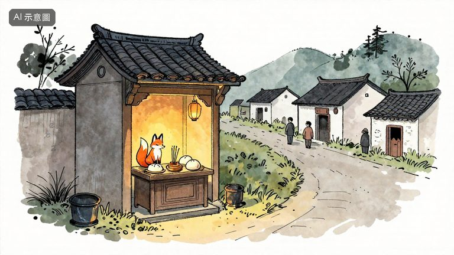 | 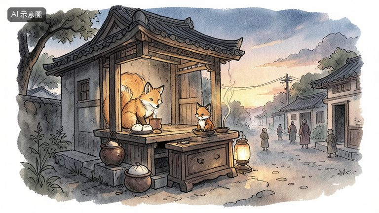 | 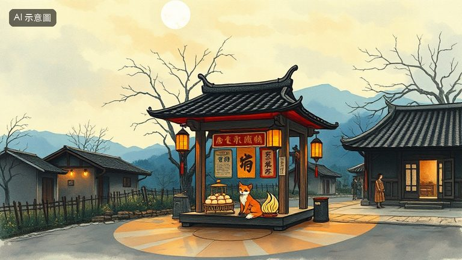 |
| s24a-fields 轉場：為什麼偏偏是狐狸：田邊、墳地、夜晚；氣氛轉場 | 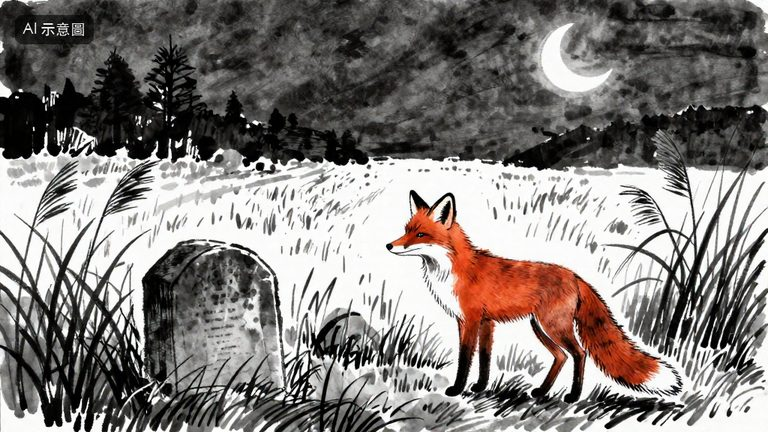 | 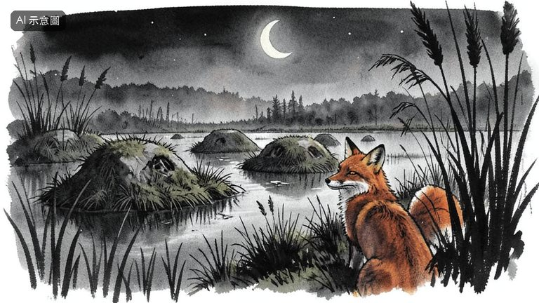 | 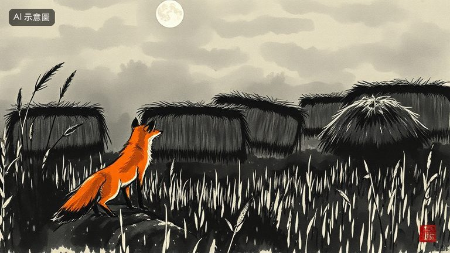 |
| 模型 | 原始 repo | 授權 | 出處 | 備註 |
|---|---|---|---|---|
| Z-Image-Turbo (4-bit, mflux) | Tongyi-MAI/Z-Image-Turbo | Apache-2.0 | 原文 | 原始 HF repo 沒有 LICENSE 檔，只有 card 的 license: apache-2.0；官方 GitHub repo 的 LICENSE 是 Apache-2.0 全文。4-bit 衍生 repo 的 card 寫 tongyi-qianwen-license，連結指向一個不存在的檔案。 |
| FLUX.2 [klein] 4B (q4, mflux) | black-forest-labs/FLUX.2-klein-4B | Apache-2.0 | 原文 | 原始 repo 的 LICENSE.md 是 Apache-2.0 全文（176 行，無附加條款）。q4 衍生 repo card 標 apache-2.0。 |
| FLUX.1 [schnell] (q4, mflux) | black-forest-labs/FLUX.1-schnell | Apache-2.0 | 原文 | 官方 GitHub 的 LICENSE-FLUX1-schnell 是 Apache-2.0 全文；HF repo card 標 apache-2.0。q4 衍生 repo card 標 apache-2.0。 |
Traditional Chinese ink wash painting on aged rice paper: a wild fox-like beast with nine bushy tails stands on a misty mountain ridge, ancient bestiary illustration, sparse expressive brush strokes, muted grey ink with light ochre wash, wide landscape composition, empty sky, illustration, not a photograph, no text, no sealChinese ink and light colour illustration: a white nine-tailed fox appears before a lone traveller in simple ancient hemp robes at the foot of a mountain at dawn, the traveller small and seen from behind, misty river valley, calm auspicious mood, loose xieyi brushwork, illustration, not a photograph, no text, no sealInk wash illustration at night: on a paper window lit from inside, the shadow of a fox turns into the silhouette of a woman, full moon, bamboo grove outside, soft grey ink with a single touch of vermilion, mysterious quiet mood, no facial detail, illustration, not a photograph, no textInk and watercolour storybook illustration: a small roadside village shrine to a fox spirit at dusk in ancient China, simple offerings of steamed buns and incense, warm lantern glow, a small fox figurine on the altar, villagers only as distant small figures, hand-drawn lines, illustration, not a photograph, no textMoody ink wash scene: a red fox at the edge of a rice field beside old grass-covered grave mounds at night, crescent moon, tall reeds, the fox glancing back over its shoulder, loose expressive brush strokes, mostly monochrome with a touch of rust orange, illustration, not a photograph, no text